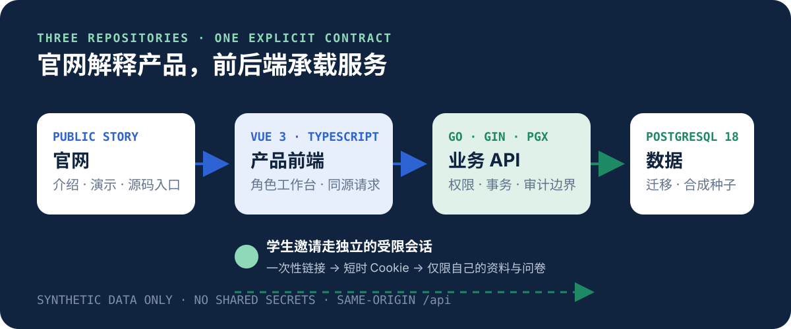

01 · 学生
完成资料与沟通偏好
通过一次性邀请填写资料，在清晰边界内补充求职目标和沟通偏好。
CAREER COACHING WORKSPACE · OPEN SOURCE
把学生资料、服务协作、持续跟进和下一步安排放在同一条可追踪的链路中。
公开版本只包含合成数据，不含真实学生数据、账号或运行密钥。
THREE VIEWS · ONE SERVICE
01 · 学生
通过一次性邀请填写资料，在清晰边界内补充求职目标和沟通偏好。
02 · 老师
围绕自己负责或协作的学生连续跟进，留下可交接的行动信息。
03 · 老板
掌握团队负载、待办风险和协作范围，在需要时完成人工复盘。
THE SERVICE LOOP
CLEAR BOUNDARIES
三个仓库通过同源 API 契约连接；官网只负责解释产品，不接触业务数据。

REAL PRODUCT PROOF
演示覆盖老板、老师与学生的主要操作；画面使用示例身份，不包含可用凭据或真实学生资料。
录制于历史部署；界面中的旧访问地址仅用于演示，不代表当前在线服务。
OPEN SOURCE · AGPL-3.0
PUBLIC REPOSITORY BOUNDARY
公开仓库不含真实学生数据、账号、邀请链接、联系方式、数据库、备份、环境文件、生产域名配置或内部运维记录。